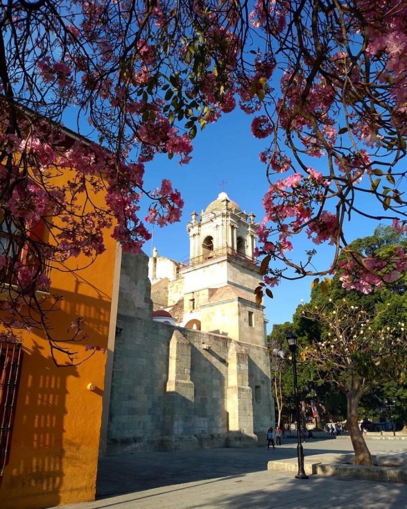
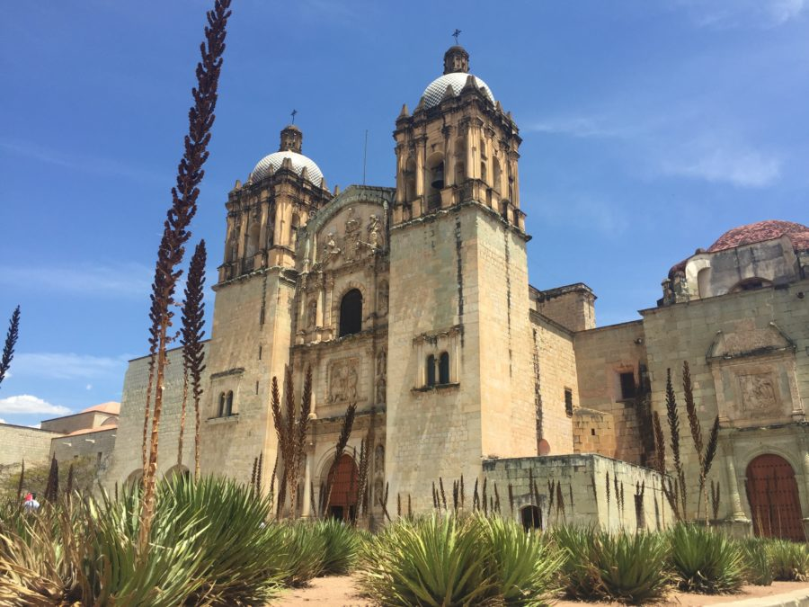

Templo de Santo Domingo de Guzmán
Un ícono de la arquitectura barroca novohispana rodeado de las vibrantes flores rosas y el misticismo de la región.
Ubicación
Ignacio Comonfort 113, Guelaguetza
68070 Oaxaca de Juárez, Oax.
Disfruta de una de las ciudades más hermosas de México.

Un ícono de la arquitectura barroca novohispana rodeado de las vibrantes flores rosas y el misticismo de la región.

El corazón cultural bajo el cielo despejado, resguardado por inmensos agaves oaxaqueños. Perfecto para iniciar el recorrido por el centro.
Una muestra viva de la energía de Oaxaca con bailarines tradicionales, música y monumentales coronas florales surcando las calles principales.
Costa Oaxaqueña
San Pedro Mixtepec, Oax.
Próximamente: Fotos del paraíso.